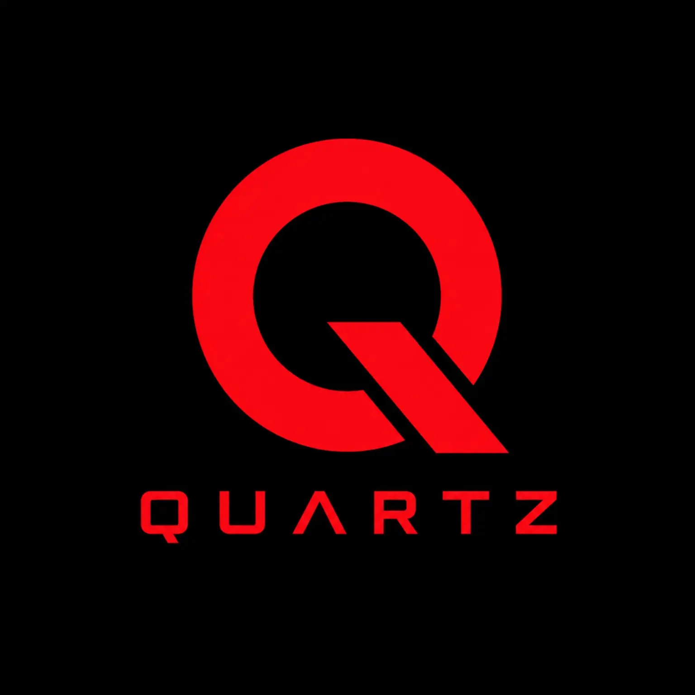
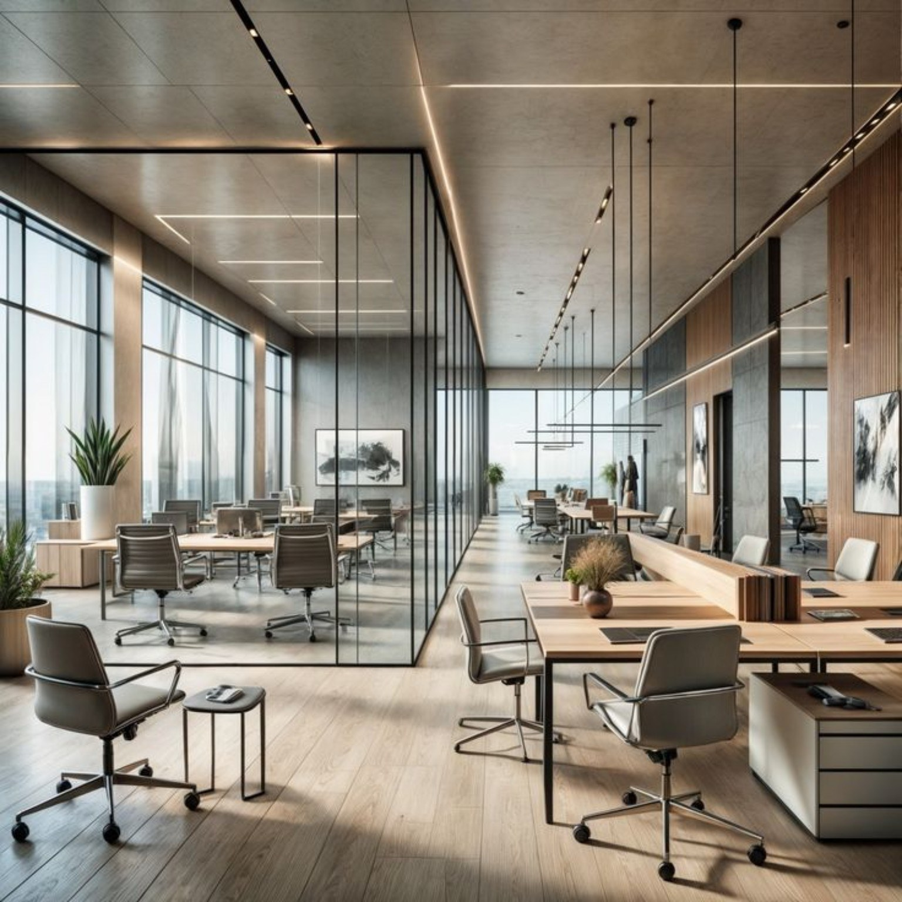

01

Founder
Quartz Web Solutions
A web and digital product studio focused on clear interfaces, purposeful systems, and considered online experiences for businesses.
quartzdigitalsolution@gmail.com Visit QuartzFounder portraitKerala, India
Founder · Entrepreneur · Builder
Building digital products, web experiences, and ideas into useful, real-world businesses.
02 / About
Sabith Salah K P is an entrepreneur, founder, and web and product builder from Kerala, India.
His work sits between an early idea and the practical details that make it real: product direction, interface decisions, technology, operations, and the experience people ultimately use.
Through Quartz Web Solutions and We Met, he is building a body of work shaped by clarity, usefulness, and a willingness to learn by making.
sabithsalahkp@gmail.com03 / Ventures
01

Founder
A web and digital product studio focused on clear interfaces, purposeful systems, and considered online experiences for businesses.
quartzdigitalsolution@gmail.com Visit Quartz02
Founder
A voice-first digital platform built around private online conversations, connection, and human listening.
wemetsite@gmail.com Visit We Met04 / Selected work

01
Websites · Product interfaces · Digital systems
Shaping business ideas into clear, responsive web experiences and the practical systems behind them.
02
Product direction · Experience · Operations
Building a voice-first platform across the member experience, listener operations, payments, trust, and administration.
03
Catalogs · Inventory · Order workflows
Creating customer-facing shopping experiences and internal tools for products, variants, availability, and orders.
05 / Founder journey
Beginning
Starting with practical web projects, turning ideas into working pages, products, and business tools.
Quartz
Creating a focused home for web, interface, and product work built around the needs of real businesses.
We Met
Moving deeper into product building through We Met, from the user experience to the operating systems around it.
Now
Continuing to refine both ventures, learn from real use, and connect the work under one clear founder identity.
06 / Philosophy
01
02
03